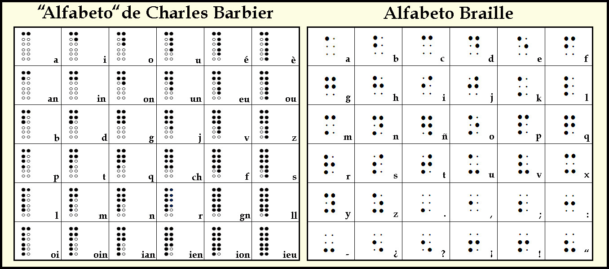

A lo largo de la historia, el acceso a la información ha sido un desafío significativo para las personas ciegas. Desde los tiempos antiguos, las sociedades han encontrado formas creativas y adaptativas para permitir que las personas sin visión participen en la vida cultural, educativa y social.
En las antiguas civilizaciones de Egipto y Mesopotamia, las personas con ceguera o discapacidad visual tenían pocas opciones de acceder a la información escrita, ya que la alfabetización misma era un privilegio reservado para las élites. Los jeroglíficos egipcios, al igual que la escritura cuneiforme de Mesopotamia, estaban pensados para ser leídos visualmente, generalmente en inscripciones en piedra o arcilla, materiales duros y resistentes más que táctiles.
Durante la época romana, los ciegos seguían limitados a la transmisión oral del conocimiento. En este período, las personas ciegas, particularmente aquellas con educación y acceso a la clase alta, podrían haber tenido la oportunidad de escuchar lecturas de textos realizados por esclavos educados llamados lectores. Los romanos valoraban la oratoria, y la práctica de recitar poesía y filosofía permitía que las personas ciegas pudieran participar en la vida intelectual de alguna forma.
En los primeros siglos del cristianismo, la Iglesia jugó un papel en la inclusión de personas con discapacidades. La fe cristiana promovía la caridad y la integración de todos los individuos. Algunos monasterios proporcionaban educación religiosa a personas ciegas, aunque el aprendizaje seguía siendo oral.
Personas como Dídimo el Ciego (siglo IV), un teólogo de Alejandría que quedó ciego en la niñez, es un ejemplo de cómo algunos lograban alcanzar altos niveles de conocimiento sin la necesidad de leer visualmente. Dídimo utilizaba su memoria y los relatos de terceros para aprender y enseñar teología, además de haber ideado un sistema que consistía en combinar puntos para formar letras griegas (posiblemente una proto-escritura táctil), aunque no hay evidencia directa de que haya sido ampliamente utilizado.
Durante la Alta Edad Media, las personas ciegas seguían dependiendo principalmente de la transmisión oral para acceder a la información. Los monasterios y conventos, centros del saber en esta época, acogían a personas ciegas y podían brindarles instrucción religiosa básica y, en algunos casos, incluso educación musical.
Durante la Baja Edad Media, la enseñanza y transmisión del conocimiento para las personas ciegas continuó dependiendo de métodos orales. Sin embargo, comenzaron a surgir algunos avances que indirectamente facilitaron el acceso a la información para las personas ciegas:
Con la llegada de la Edad Media, la alfabetización comenzó a crecer, pero las personas ciegas todavía enfrentaban grandes obstáculos. Los monasterios eran centros de conocimiento, donde los monjes copiaban libros a mano. A pesar de la exclusividad del acceso a la escritura, algunas personas ciegas lograron ser educadas a través de la enseñanza oral y la repetición.
Durante el Renacimiento, aunque la imprenta revolucionó el acceso a la información, las personas ciegas seguían sin tener acceso a textos impresos. Sin embargo, surgieron formas innovadoras de comunicación. Los instrumentos musicales, por ejemplo, eran un medio crucial para la expresión y la educación de las personas ciegas, permitiéndoles participar en la vida cultural de su época.
En el siglo XVIII, empezaron a surgir organizaciones que se dedicaban a la educación de personas ciegas. En 1784, el poeta y educador francés Jacques van Langenhove fundó la primera escuela para ciegos en Francia, que sirvió como modelo para otras instituciones. Esta escuela no solo enseñaba habilidades prácticas, sino que también introdujo a los estudiantes en la literatura y la filosofía a través de métodos orales.
A pesar de estas iniciativas, el acceso a la información seguía siendo limitado. Los textos impresos seguían siendo inaccesibles, y las personas ciegas dependían en gran medida de la memoria y la transmisión oral para obtener información. En este contexto, los ciegos desarrollaron habilidades excepcionales en la escucha y la memorización, lo que les permitió mantener un alto nivel de conocimiento a pesar de las limitaciones.
A medida que se acercaba el siglo XIX, comenzaron a aparecer métodos alternativos para la lectura. Por ejemplo, el "sistema de letras puntiagudas" se utilizó en algunos lugares para ayudar a las personas ciegas a identificar letras y palabras. Sin embargo, estos métodos eran rudimentarios y carecían de un sistema uniforme que facilitara la lectura de libros completos.
Durante este tiempo, surgieron varias organizaciones y movimientos dedicados a mejorar la educación y el acceso a la información para personas ciegas. Se llevaron a cabo conferencias y encuentros donde educadores, familias y personas ciegas discutían sobre las mejores prácticas y métodos de enseñanza. Vámos a destacar dos figuras importantes en el nacimiento del braille.
Nació el 13 de noviembre de 1745-París, Isla de Francia, y murió el 19 de marzo de 1822.
Fué uno de los primeros en interesarse en la integración socio-cultural de los invidentes.

Fundó en París la primera escuela para ciegos, germen del "Institut national des jeunes aveugles" (Instituto nacional de jóvenes ciegos). Puso a punto los primeros materiales de lectura para invidentes y se dedicó a promover su inserción en el trabajo.
Su gran idea fue el modo de hacer leer a los ciegos mediante caracteres especiales: usando las letras del alfabeto latino normal (pero con un tamaño muy superior) grabadas en relieve en hojas de papel grueso. Con este método de letras en relieve.
En 1786 se fundó la "Institution des Enfants Aveugles" (Institución de Niños Ciegos). Su objetivo era la de instruir a los alumnos y enseñarles algún trabajo manual: hilatura, impresión tipográfica..
De la Serre Nació el 18 de mayo de 1767 - 29 de abril de 1841) fue un militar y aventurero francés obsesionado por los lenguajes codificados y famoso por inventar el código de lectura que estudió y en el que se basó Louis Braille para crear su famoso sistema de lectura para invidentes.
Su sistema se basaba en una cuadrícula de 6x6 en la que cada cuadro correspondía a un fonema determinado en francés. Asimismo, en cada cuadro venían representadas dos columnas paralelas de un máximo de 6 puntos cada una. La primera de estas columnas representaba la fila de la cuadrícula y la segunda representaba la columna de la cuadrícula.
En 1819, en el Museo de la Industria de París, durante una demostración de su sistema y de una máquina de su invención, se dio cuenta de que los invidentes podrían beneficiarse de su alfabeto. Hasta la fecha, el aprendizaje de la lectura para invidentes seguía las pautas del sistema inventado por Valentin Haüy, basado en la representación de los mismos caracteres que utilizaban las personas videntes, realizados en relieve y de mayores dimensiones.